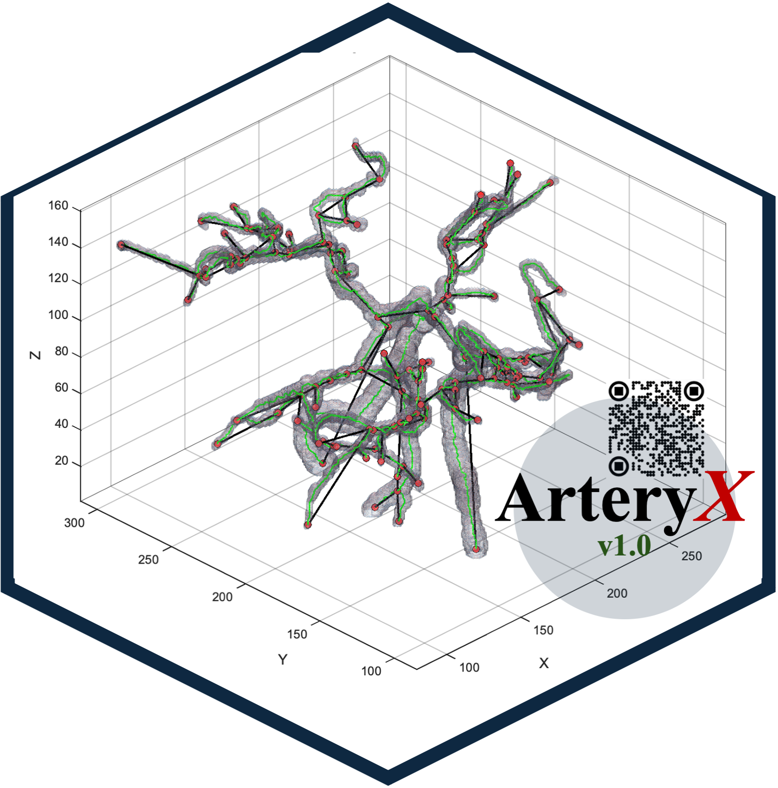
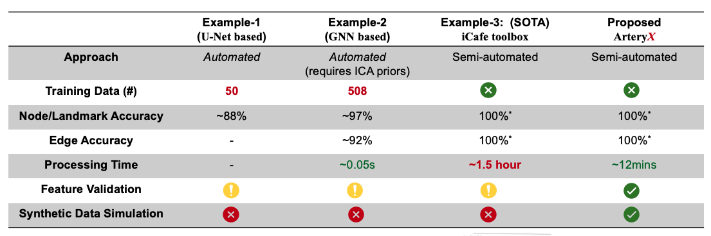
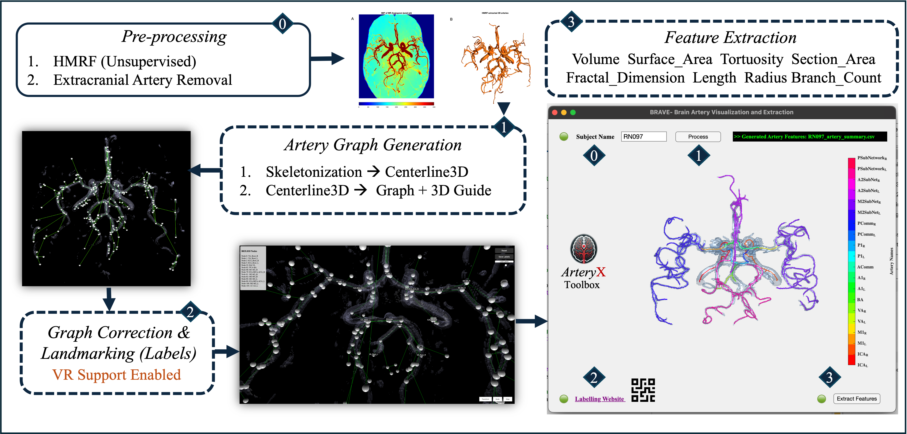

<!DOCTYPE html>
<html lang="en">
<head>
  <meta charset="UTF-8">
  <meta name="viewport" content="width=device-width, initial-scale=1.0">
  <title>ArteryX - Advanced & Practical Artery Feature Extraction Toolbox for MR Angiograms</title>
  <script src="https://cdn.jsdelivr.net/npm/react@18.2.0/umd/react.development.js"></script>
  <script src="https://cdn.jsdelivr.net/npm/react-dom@18.2.0/umd/react-dom.development.js"></script>
  <script src="https://cdn.jsdelivr.net/npm/@babel/standalone@7.22.5/babel.min.js"></script>
  <script src="https://cdn.tailwindcss.com"></script>
</head>
<body>
  <div id="root"></div>
  <script type="text/babel">
    const { useState } = React;

    // Navigation Component (Enhanced Mobile Responsiveness)
    const NavBar = ({ activeTab, setActiveTab }) => {
      return (
        <nav className="bg-gray-800 p-3 sm:p-4 flex flex-col sm:flex-row justify-between items-center shadow-lg">
          <div className="flex items-center mb-2 sm:mb-0">
            
            <h1 className="text-lg sm:text-2xl font-bold text-yellow-400">ArteryX</h1>
          </div>
          <div className="flex flex-wrap justify-center sm:justify-end space-x-1 sm:space-x-4">
            {['Home', 'About', 'Tutorial', 'Downloads'].map(tab => (
              <button
                key={tab}
                onClick={() => setActiveTab(tab)}
                className={`text-xs sm:text-lg ${activeTab === tab ? 'text-red-500 border-b-2 border-red-500' : 'text-gray-300'} hover:text-red-400 transition duration-300 px-2 sm:px-2 py-1`}
              >
                {tab}
              </button>
            ))}
          </div>
        </nav>
      );
    };

    // Home Tab Component (Enhanced Mobile Responsiveness)
    // FIX: Added { setActiveTab } as a prop so the button works
    const Home = ({ setActiveTab }) => (
      <div className="relative text-white p-4 sm:p-10 min-h-screen bg-gray-900 flex flex-col items-center justify-center">
        <div className="text-center z-10">
          <h2 className="text-2xl sm:text-5xl font-bold mb-4 sm:mb-6 text-yellow-400">Welcome to ArteryX v1.4</h2>
          <p className="text-sm sm:text-xl mb-4 sm:mb-8 text-gray-300">Advanced & Practical Artery Feature Extraction Toolbox for MR Angiograms</p>
          <div className="flex flex-col sm:flex-row items-center justify-center space-y-4 sm:space-y-0 sm:space-x-8">
            
            <div className="text-left max-w-[250px] sm:max-w-md">
              <h3 className="text-base sm:text-2xl font-semibold text-red-500 mb-2 sm:mb-4">Key Features:</h3>
              <ul className="list-disc list-inside text-sm sm:text-lg text-gray-300 space-y-1 sm:space-y-2">
                <li>Extracts Morphological, Topological and Complexity Features</li>
                <li>6x faster processing than SOTA (iCafe).</li>
                <li>Solves the disconnected artery issue of SOTA using vessel-fusing algorithm.</li>
                <li>Shows greater sensitivity in CSVD cohort.</li>
                <li>Processing Time ~ 12-15mins per subject.</li>
              </ul>
            </div>
          </div>
          <button onClick={() => setActiveTab('Downloads')} 
            className="bg-red-500 hover:bg-red-600 text-white font-semibold py-1 px-3 sm:py-2 sm:px-6 rounded-lg transition duration-300 mt-4 sm:mt-8">
            Get Started
          </button>
        </div>
      </div>
    );

    // About Tab Component (Enhanced Mobile Responsiveness)
    const About = () => (
      <div className="bg-gray-900 text-white p-4 sm:p-10 min-h-screen">
        <h2 className="text-2xl sm:text-4xl font-bold mb-4 sm:mb-6 text-yellow-400">About ArteryX</h2>
        <p className="text-sm sm:text-lg mb-3 sm:mb-4 text-gray-300">
          ArteryX is a state-of-the-art toolbox designed for extracting and visualizing arterial structures from 3D medical imaging data.
          With advanced algorithms and an intuitive interface, ArteryX helps researchers and medical professionals analyze vascular networks with precision.
        </p>
        <p className="text-sm sm:text-lg mb-4 sm:mb-6 text-gray-300">
          Version 1.4 is the original publication release, with official Windows and Mac builds for artery segmentation, 3D visualization, and data export.
        </p>
      
   
      <div className="text-center mb-6 sm:mb-10">
        <h3 className="text-base sm:text-xl font-semibold text-red-500 mb-3 sm:mb-4">Key Differences:</h3>
         
      </div>

        <div className="text-center mb-6 sm:mb-10">
          <h3 className="text-base sm:text-xl font-semibold text-red-500 mb-3 sm:mb-4">ArteryX Processing Pipeline</h3>
          
        </div>
        <div className="text-center">
          <h3 className="text-base sm:text-xl font-semibold text-red-500 mb-3 sm:mb-4">Learning Artery Labeling</h3>
          <div className="sketchfab-embed-wrapper w-full max-w-[350px] sm:max-w-3xl mx-auto">
            <iframe 
              title="ArteryX Guide: Learning Material" 
              frameBorder="0" 
              allowFullScreen 
              mozallowfullscreen="true" 
              webkitallowfullscreen="true" 
              allow="autoplay; fullscreen; xr-spatial-tracking" 
              xr-spatial-tracking 
              execution-while-out-of-viewport 
              execution-while-not-rendered 
              web-share 
              src="https://sketchfab.com/models/e8c18b41bec74543b1db783bfe4f1dc0/embed"
              className="w-full h-48 sm:h-96"
            />
            <p className="text-xs sm:text-base text-gray-300 mt-2">
              <a 
                href="https://sketchfab.com/3d-models/arteryx-guide-learning-material-e8c18b41bec74543b1db783bfe4f1dc0?utm_medium=embed&utm_campaign=share-popup&utm_content=e8c18b41bec74543b1db783bfe4f1dc0" 
                target="_blank" 
                rel="nofollow"
                className="text-yellow-400 hover:underline"
              >
                ArteryX Guide: Learning Material
              </a>{' '}
              by{' '}
              <a 
                href="https://sketchfab.com/abrarfaiyaz.iutcse?utm_medium=embed&utm_campaign=share-popup&utm_content=e8c18b41bec74543b1db783bfe4f1dc0" 
                target="_blank" 
                rel="nofollow"
                className="text-yellow-400 hover:underline"
              >
                abrarfaiyaz.iutcse
              </a>{' '}
              on{' '}
              <a 
                href="https://sketchfab.com?utm_medium=embed&utm_campaign=share-popup&utm_content=e8c18b41bec74543b1db783bfe4f1dc0" 
                target="_blank" 
                rel="nofollow"
                className="text-yellow-400 hover:underline"
              >
                Sketchfab
              </a>
            </p>
          </div>
        </div>
        <div className="text-center">
      <h3 className="text-base sm:text-xl font-semibold text-red-500 mb-3 sm:mb-4">ArteryX Video Tutorial</h3>
      <iframe 
        title="ArteryX Motivation and Details" 
        frameBorder="0" 
        allowFullScreen 
        mozallowfullscreen="true" 
        webkitallowfullscreen="true" 
        allow="autoplay; fullscreen" 
        src="https://www.youtube.com/embed/vWgwLZ1fBZw" 
        className="w-full max-w-[350px] sm:max-w-3xl h-48 sm:h-96 mx-auto rounded-lg shadow-md"
      />
    </div>
      </div>
    );

    // Tutorial Tab Component (Enhanced Mobile Responsiveness)
    const Tutorial = () => (
      <div className="bg-gray-900 text-white p-4 sm:p-10 min-h-screen">
        <h2 className="text-2xl sm:text-4xl font-bold mb-4 sm:mb-6 text-yellow-400">Tutorial for ArteryX v1.4</h2>
        <p className="text-sm sm:text-lg mb-3 sm:mb-4 text-gray-300">
          ArteryX v1.4 is the official original publication version for Windows and Mac. The workflow is the same across platforms after installation: prepare BIDS-formatted NIfTI data, launch ArteryX, inspect segmentation, landmark the arterial graph, and export artery-level features.
        </p>
        <div className="mb-6 sm:mb-8">
          <h3 className="text-base sm:text-xl font-semibold text-red-500 mb-2 sm:mb-3">Platform Setup Summary</h3>
          <div className="grid grid-cols-1 md:grid-cols-2 gap-4">
            <div className="bg-gray-800 border border-gray-700 rounded-lg p-4">
              <h4 className="text-sm sm:text-lg font-semibold text-yellow-400 mb-2">Windows</h4>
              <p className="text-xs sm:text-base text-gray-300 mb-3">
                Download the official v1.4 Windows package, install the MATLAB Runtime as described in the included readme, and compile or place the required FSL BET2 executable before preprocessing.
              </p>
              <div className="flex flex-wrap gap-2">
                <a href="https://rochester.box.com/s/4qk7njhzlfhokv6tteguteqjpt7x7yoq" target="_blank" rel="noopener noreferrer" className="bg-yellow-500 hover:bg-yellow-600 text-gray-900 font-bold py-2 px-3 rounded-lg transition duration-300 inline-block text-xs sm:text-sm">
                  Download Windows v1.4
                </a>
                <a href="bet2-windows-build-tutorial.html" target="_blank" rel="noopener noreferrer" className="bg-gray-700 hover:bg-red-600 text-white font-semibold py-2 px-3 rounded-lg transition duration-300 inline-block text-xs sm:text-sm">
                  BET2 Windows Tutorial
                </a>
              </div>
            </div>
            <div className="bg-gray-800 border border-gray-700 rounded-lg p-4">
              <h4 className="text-sm sm:text-lg font-semibold text-yellow-400 mb-2">Mac Intel and Apple Silicon</h4>
              <p className="text-xs sm:text-base text-gray-300 mb-3">
                Download the official v1.4 Mac package for Intel or Apple Silicon. General FSL installation on macOS provides BET2, so no separate BET2 compilation is needed.
              </p>
              <a href="https://rochester.box.com/s/xl0am406wuwzbk75ix2jacpj0tsa7bpk" target="_blank" rel="noopener noreferrer" className="bg-yellow-500 hover:bg-yellow-600 text-gray-900 font-bold py-2 px-3 rounded-lg transition duration-300 inline-block text-xs sm:text-sm">
                Download Mac v1.4
              </a>
            </div>
          </div>
        </div>
        <div className="mb-6 sm:mb-8">
          <h3 className="text-base sm:text-xl font-semibold text-red-500 mb-2 sm:mb-3">Video Walkthrough</h3>
          <p className="text-sm sm:text-lg mb-3 sm:mb-4 text-gray-300">
            Follow the walkthrough below to get started with ArteryX and perform artery extraction on your MRA data.
          </p>
          <iframe width="560" height="315" src="https://www.youtube.com/embed/videoseries?si=FDcVb23fL1j6G7rq&amp;list=PLvROAo2skjvikBCK_NZ8SJ4aMfSioTlc7" title="YouTube video player" frameBorder="0" className="w-full max-w-[350px] sm:max-w-3xl h-48 sm:h-96 rounded-lg shadow-md" allow="accelerometer; autoplay; clipboard-write; encrypted-media; gyroscope; picture-in-picture; web-share" referrerPolicy="strict-origin-when-cross-origin" allowFullScreen></iframe>
        </div>
        <div className="space-y-4 sm:space-y-6">
          <div>
            <h3 className="text-base sm:text-xl font-semibold text-red-500">Step 1: Install ArteryX v1.4</h3>
            <p className="text-sm sm:text-lg text-gray-300">
              Download ArteryX v1.4 from the Downloads tab for your operating system. Run the installer and follow the on-screen instructions. MATLAB Runtime needs to be configured with the readme.txt instructions included with the installer. Ensure you have at least 2-3GB of free disk space and a compatible GPU for optimal performance.

              For Mac users, make sure the quarantine attribute is removed if macOS blocks the app after download-
               <pre className="bg-gray-800 text-sm sm:text-base text-gray-200 p-2 sm:p-3 rounded-lg overflow-x-auto">
                {`xattr -d com.apple.quarantine ArteryX_MacOS_installer.app`}
              </pre>
            </p>
            <p className="text-sm sm:text-lg text-gray-300 mt-3">
              Windows users must also make sure the fslbet2 compilation requirement is satisfied. Follow the dedicated <a href="bet2-windows-build-tutorial.html" target="_blank" rel="noopener noreferrer" className="text-yellow-400 hover:underline">BET2 Windows build tutorial</a>. Mac users can use the standard FSL installation, which includes bet2.
            </p>
          </div>
          <div>
            <h3 className="text-base sm:text-xl font-semibold text-red-500">Step 2: Prepare Your Data</h3>
            <p className="text-sm sm:text-lg text-gray-300">
              ArteryX works directly with NIfTI files structured in BIDS directory format. Convert your 3D MRA data into NIfTI using dcm2niix and perform skull extraction with bet2 in the FSL toolbox. ArteryX has been tested for the following resolutions: 0.52x0.52x0.5; 0.26x0.26x0.5; 0.52x0.52x0.8.
            </p>
          </div>
           <div className="mt-6 sm:mt-8">
            <h3 className="text-base sm:text-xl font-semibold text-red-500 mb-2 sm:mb-3">Step 3: Run ArteryX</h3>
            <p className="text-xs sm:text-base text-gray-300">
              After moving to the installation directory, run the following in your terminal. Make sure the MATLAB Runtime location is correct for your system.
            </p>
            <pre className="bg-gray-800 text-sm sm:text-base text-gray-200 p-2 sm:p-3 rounded-lg overflow-x-auto">
              
              {`./run_ArteryX.sh /Applications/MATLAB/MATLAB_Runtime/R2024b`}
            </pre>
          </div>
          <div>
            <h3 className="text-base sm:text-xl font-semibold text-red-500">Step 4: Load and Preprocess</h3>
            <p className="text-sm sm:text-lg text-gray-300">
              Launch ArteryX and input the subject and session name in the following format: [SUBJECTNAME/SESSION], for example RN009/bsl. The toolbox will open a configuration window if one is not already set and ask for the location of the BIDS NIfTI directory. Select the directory and the toolbox will start analyzing the data.
            </p>
          </div>
          <div>
            <h3 className="text-base sm:text-xl font-semibold text-red-500">Step 5: Artery Segmentation (ArteryX takes care of this step)</h3>
            <p className="text-sm sm:text-lg text-gray-300">
              Once the data is ready, the toolbox performs unsupervised segmentation with the default parameters for Expectation Maximization.
            </p>
          </div>
          <div>
            <h3 className="text-base sm:text-xl font-semibold text-red-500">Step 6: Landmarking and 3D Visualization</h3>
            <p className="text-sm sm:text-lg text-gray-300">
              Once segmentation is complete, ensure it looks good with the code provided in the terminal console. Then click on the next step. Use the mouse to rotate and zoom into the arterial model. 
              Adjust the rendering settings (e.g., node-size = 0.8 with +/-) for better visualization. Landmark the nodes switching to node tab at the bottom right corner of the screen. 

              Please watch the following video for the anatomical details. Landmarking will be easier after reviewing Figure 3 of the <a href="https://arxiv.org/pdf/2507.07920" target="_blank" rel="noopener noreferrer" className="text-yellow-400 hover:underline">ArteryX arXiv paper</a>.
            </p>
            <iframe width="560" height="315" src="https://www.youtube.com/embed/QYmApwTicHs?si=UbVhpvHcX4yzHu-O" title="YouTube video player" frameBorder="0" className="w-full max-w-[350px] sm:max-w-3xl h-48 sm:h-96 rounded-lg shadow-md mt-3" allow="accelerometer; autoplay; clipboard-write; encrypted-media; gyroscope; picture-in-picture; web-share" referrerPolicy="strict-origin-when-cross-origin" allowFullScreen></iframe>
          </div>
          <div>
            <h3 className="text-base sm:text-xl font-semibold text-red-500">Step 7: Export Results</h3>
            <p className="text-sm sm:text-lg text-gray-300">
             Once landmarking is complete, hit Control+S to save/download the landmarkings as a JSON file and then load this file into the MATLAB applet. The toolbox will handle the rest and produce a "[SubjName]_ArterX.csv" file containing features for each artery.
            </p>
          </div>
        </div>
        <p className="text-sm sm:text-lg mt-4 sm:mt-6 text-gray-300">
          For advanced usage or implementation of the feature class, refer to the user manual included in the download package or contact at faiyaz_abrar@icloud.com
        </p>
      </div>
    );

    // Downloads Tab Component
    const Downloads = () => (
      <div className="bg-gray-900 text-white p-4 sm:p-10 min-h-screen">
        <h2 className="text-2xl sm:text-4xl font-bold mb-4 sm:mb-6 text-yellow-400">Downloads for ArteryX</h2>
        <p className="text-sm sm:text-lg mb-6 sm:mb-8 text-gray-300">
          Download ArteryX for your operating system below. The package includes the software and user manual (readme.txt). Sample BIDS datasets can be downloaded from shared example BIDS formatted <a href="https://rochester.box.com/s/qd274o93qupmi7dadnyby0v9yof16cp7" className="text-yellow-400 hover:underline">TopBrain Dataset</a> to get you started.
        </p>

        {/* HIGHLIGHTED VERSION: v1.4 Official Publication Release */}
        <div className="mb-8 p-5 sm:p-6 bg-gray-800 border-2 border-yellow-400 rounded-lg shadow-lg relative overflow-hidden">
          <div className="absolute top-0 right-0 bg-yellow-400 text-gray-900 text-xs sm:text-sm font-bold px-3 py-1 rounded-bl-lg uppercase tracking-wider">
            Official Publication Version
          </div>
          <h3 className="text-lg sm:text-2xl font-bold text-white mb-2 mt-4 sm:mt-0">ArteryX v1.4</h3>
          <p className="text-sm sm:text-base text-gray-300 mb-3">
            This is the official original publication release for Windows and Mac. The Mac package supports both Intel and Apple Silicon systems.
          </p>
          <p className="text-xs sm:text-sm text-gray-400 mb-4">Requirements: Windows 10 or later, or macOS 11.0 or later; 16GB RAM recommended</p>
          
          <div className="flex flex-wrap gap-3">
            <a href="https://rochester.box.com/s/4qk7njhzlfhokv6tteguteqjpt7x7yoq" target="_blank" rel="noopener noreferrer" className="bg-yellow-500 hover:bg-yellow-600 text-gray-900 font-bold py-2 px-4 sm:py-3 sm:px-6 rounded-lg transition duration-300 inline-block text-sm sm:text-base shadow-md">
              Download v1.4 for Windows
            </a>
            <a href="https://rochester.box.com/s/xl0am406wuwzbk75ix2jacpj0tsa7bpk" target="_blank" rel="noopener noreferrer" className="bg-yellow-500 hover:bg-yellow-600 text-gray-900 font-bold py-2 px-4 sm:py-3 sm:px-6 rounded-lg transition duration-300 inline-block text-sm sm:text-base shadow-md">
              Download v1.4 for Mac
            </a>
          </div>
          <p className="text-xs sm:text-sm text-gray-400 mt-4">
            Windows users must compile or provide fslbet2 before preprocessing. Follow the <a href="bet2-windows-build-tutorial.html" target="_blank" rel="noopener noreferrer" className="text-yellow-400 hover:underline">BET2 Windows build tutorial</a>. On Mac, a general FSL installation provides bet2.
          </p>
        </div>

        {/* OTHER VERSIONS */}
        <h3 className="text-lg sm:text-xl font-semibold text-red-500 mb-4 border-b border-gray-700 pb-2">Previous Versions</h3>
        <div className="space-y-6">
          <div>
            <p className="text-sm sm:text-lg text-gray-300">ArteryX v1.1 (Windows)</p>
            <p className="text-xs sm:text-base text-gray-400 mb-2">Size: 38 MB | Requirements: Windows 10 or later, 16GB RAM</p>
            <a href="https://rochester.box.com/s/arwpg53d983fxtg3zf2cgs81fpkprwgw" className="bg-gray-700 hover:bg-red-600 text-white font-semibold py-1 px-3 sm:py-2 sm:px-4 rounded-lg transition duration-300 inline-block text-xs sm:text-base">
              Download for Windows   
            </a>
          </div>
          <div>
            <p className="text-sm sm:text-lg text-gray-300">ArteryX v1.1 (MacOS - Intel)</p>
            <p className="text-xs sm:text-base text-gray-400 mb-2">Size: 5 MB | Requirements: macOS 11.0 or later (Intel architecture), 16GB RAM</p>
            <a href="https://rochester.box.com/s/6v0v8fms3etlodcqltkysa42uykloo55" className="bg-gray-700 hover:bg-red-600 text-white font-semibold py-1 px-3 sm:py-2 sm:px-4 rounded-lg transition duration-300 inline-block text-xs sm:text-base">
              Download for MacOS (Intel)
            </a>
          </div>
        </div>

        {/* License Section */}
        <div className="mt-10 bg-gray-800 p-4 rounded-lg border border-gray-700">
          <h3 className="text-base sm:text-xl font-semibold text-yellow-400 mb-2">Software License</h3>
          <p className="text-xs sm:text-base text-gray-300 mb-3">
            ArteryX is released under an Academic Non-Commercial License, permitting use and modification for academic and research purposes only. Commercial use is strictly prohibited without permission.
          </p>
          <a href="LICENSE.txt" target="_blank" rel="noopener noreferrer" className="bg-gray-700 hover:bg-gray-600 text-white font-semibold py-1 px-3 sm:py-2 sm:px-4 rounded-lg transition duration-300 inline-block text-xs sm:text-base border border-gray-500">
            📄 View LICENSE.txt
          </a>
        </div>

        {/* Citation Section */}
        <div className="mt-6 sm:mt-8">
          <h3 className="text-base sm:text-xl font-semibold text-red-500 mb-2 sm:mb-3">Citation</h3>
          <p className="text-xs sm:text-base text-gray-300">
            If you use ArteryX in your research, please cite the following work:
          </p>
          <pre className="bg-gray-800 text-sm sm:text-base text-gray-200 p-2 sm:p-3 rounded-lg overflow-x-auto">
            {`@inproceedings{faiyaz_arteryx_2025,
  title={ArteryX: Enhancing Sensitivity in Brain Artery Feature Extraction Using Arterial Graph Network},
  author={Faiyaz, Abrar and Hoang, Nhat and Schifitto, Giovanni and Uddin, Md Nasir},
  booktitle={Proc. Intl. Soc. Mag. Reson. Med. 33},
  year={2025}
}`}
          </pre>

          <pre className="bg-gray-800 text-sm sm:text-base text-gray-200 p-2 sm:p-3 rounded-lg overflow-x-auto mt-4">
            {`@article{faiyaz2026arteryx,
  title={ArteryX: A Reliable End-To-End Toolbox for Standardized Intracranial Artery Feature Extraction From 3D TOF-MRA},
  author={Faiyaz, Abrar and Hoang, Nhat and Schifitto, Giovanni and Uddin, Md Nasir},
  journal={Magnetic Resonance in Medicine},
  year={2026}
}`}
          </pre>
        </div>
        <p className="text-sm sm:text-lg mt-4 sm:mt-6 text-gray-300">
          Need help with installation? Check the Tutorial tab or email at faiyaz_abrar@icloud.com
        </p>
      </div>
    );

    // Main App Component
    const App = () => {
      const [activeTab, setActiveTab] = useState('Home');

      return (
        <div className="font-sans">
          <NavBar activeTab={activeTab} setActiveTab={setActiveTab} />
          {/* FIX: Passed setActiveTab to Home component */}
          {activeTab === 'Home' && <Home setActiveTab={setActiveTab} />}
          {activeTab === 'About' && <About />}
          {activeTab === 'Tutorial' && <Tutorial />}
          {activeTab === 'Downloads' && <Downloads />}
        </div>
      );
    };

    ReactDOM.render(<App />, document.getElementById('root'));
  </script>
</body>
</html>
